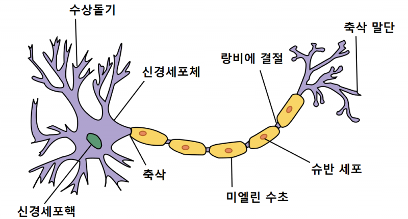
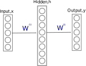

3. Neural Networks Foundations
Overview.
NN 은 선형 변환들과 + 비 선형 함수들의 조합 이다. - NN의 장점과 유연함은 위의 간단한 모듈들을 대규모로 구성하여 사용 함에 있다. - 학습이란? - loss function 을 데이터에 맞게 최적화 시키는걸 의미한다. - 보통 미분의 연쇄 법칙 그리고 SGD 를 사용해 최적화 한다.
사용처
- 컴퓨터 비전
- 음성인식, 기계번역
- text to speech
- RL (DQN/A3C)
- 자율주행차
- 등.
우리가 만들려고 하는 nn 은 위의 식으로 표현 할 수 있다.
Road map
- Single layer networks
- Networks with one hidden layer
- Modern deep nets
- nn 을 컴퓨터 그래프 표현으로.
- Learing
- Chain rule
- Modualr backprop & automatic differentiation
- Module zoo: layers and losses
- 현업에서 사용하는 팁
명칭관련 주의
- neuron == unit
- 비선형 == activation function
- (선형 변환 + 비 선형) 을 합쳐서 layer 라고 부른다.
- 소프트웨어에서는 atomic ops 를 layer 라고 부른다.
Single layer networks
- Linear layer
- Sigmoid activiation function layer
- Binary classification / logistic regression 리뷰
- Multi-way descisions: softmax layer
- Rectified(put currect) linear layers (relu)
Linear layer
동의어"fully connecnted" 또는 "dense" layers

인간의 뇌를 구성하고 있는 신경 세포를 보면 수상돌기를 통해 여러개의 인풋을 받아 축삭말단을 통해 여러개의 아웃풋을 생성한다. - 위의 현상을 모델링 해보자.
input ouptput 정의
2개의 인풋을 받아 하나의 아웃풋을 생성한다.

우리는 $x_{1}$과 $x_{2}$ 를 받아. $y_{1}$ 을 만들려고 한다. 우리는 아래와 같이 정의 할 것 이다.

아웃풋 하나에 대해 아래와 같이 정의 하자. $$ f: R^{n} \to R \\ y = \sum_{i}^{n}w_{i}x_{i} + b $$
그렇다면 신경 세포는 아래와 같이 행렬과 벡터의 내적으로 정의 할 수 있다. $$ f: R^{n} \to R^{m} \\ y = Wx + b $$
Sigmoid layer
Activation function 중 하나. $f: R \to R$ 함수 이며 $-\infty \leq x \leq +\infty$ 를 input 으로 받아 $0 \leq y \leq 1$ 의 값을 리턴한다. $$\sigma = \frac{1}{1 + e^{-x}}$$
선형 변환이 아니기 때문에 비선형 함수라고 한다.
인공 뉴론
이제 위의 linear layer 와 activation layer(sigmoid) 를 합치면 인공 뉴론이 된다. - 지금은 한개의 x vector 에 대해 feed forwarding 하는 부분만 고려하기 때문에 x, y 는 1차원 벡터이다.

$$ y = \sigma \left( \sum_{i}w_{i}x_{i}+b\right) \\ y = \sigma (Wx + B) $$
input X 를 받아 output Y 로 변형(transformation)하는 함수(인공 뉴론) 은 아래 그림에서 $\to$ 로 표현되었다. 아래 그림은 1단 레이어를 도식화 한 것이다.
- 위의 뉴론을 구현하고 W 값을 구하면 우리는 binary classification을 할 수 있다.
- 아래는 $x_{1}, x_{2}$ 로 구성된 점들을 주고 훈련을 시킨다. 그러면 이후 새로운 $x_{1}, x_{2}$ 을 주면 답을 예측 할 수 있다.
X = [(-1, -4),...,(4, 4)] //training data 그림에서는 X[i][0] 을 x 축 값, X[i][1] 을 y 축 값 으로 사용해서 표기
y = [(yellow),...,(blue)] // X 에 대응하는 label
model = train(X, y) // w를 구함 아래에서 설명함.
model.predict((5, 5)) // 구해진 w에 위에 정의한 인공 뉴론을 사용해 답을 예측. blue

Softmax layer
Multi-classs classificaion 에서 유용함. $$ y = \text{softmax}(x), \text{where: } y_{i} = \frac{e^{x_{i}}}{\sum_{j=1}^{K}e^{x_{j}}} \tag{3.1} $$
argmax 함수
- input array 을 주면 input 과 같은 크기의 array 를 리턴
- y 값은 x 값 중 가장 큰 값만 1, 나머지는 0 으로 돌려줌
- 모든 y 값을 합하면 1
y = argmax([1, 1, 8])
// y = [0, 0, 1]
sum(y) // 1
softmax
- soft argmax 함수라고 생각해도 됨.
- input array 을 주면 input 과 같은 크기의 array 를 리턴
- y 값은 x 값 중 가장 큰 값은 1에 가깝게 , 나머지는 0 에 가깝게 돌려줌
- 모든 y 값을 합하면 1
- 합하면 1이 되기 때문에 확률로 생각 할 수 있음
y = softmax([1, 1, 8])
// 대략 y = [0.001, 0.001, 0.998]
// 실제 y = [9.10221936e-04, 9.10221936e-04, 9.98179556e-01]
sum(y) // 1
Softmax and cross-entropy / NLL loss
예측
-
우리는 Linear layer + softmax 을 합치면multinomial logistic regression 또는 multi-class classification 이 가능해진다. $$ y_{i} = \frac{e^{\sum_{j}w_{ij}x_{j} + b_{i}}}{\sum_{k=1}^{K}e^{\sum_{j}w_{kj}x_{j} + b_{k}}} $$ 위의 식을 사용해 nn을 구성 할 수 있다.
-
MNIST 데이터에 적용한다고 생각해보자.
- input: 0~9 까지의 손글씨 사진.
- output: 0~9 까지의 손글씨 사진이 나타내는 숫자.
//예제를 간단하게 하기 위해 0~2번까지의 숫자로 구성된 사진만 있다고 해보자.
X = [(raw values represent 2),...,(raw values represent 1)] //training data
y = [(0,0,1),...,(0,1,0)] // X 에 대응하는 label
model = train(X, y) // w를 구함 아래에서 설명함.
model.predict((raw values represent 0)) // (1, 0, 0) 을 해석하면 0 임을 알 수 있음.
학습
- loss function 으로 negative log likelihood(NLL) / cross-entropy of true labels 을 사용 한다. $$ NLL(t, y) = Xent(t, y) = - \sum_{t}^{classes:C} t_{i}\text{log }y_{i} $$
Rectified-linear layer
최소 0, 아니면 $x_{i}$ $$ y = relu(x) \text{, where:} y_{i} = \text{maximum}(0, x_{i}) $$
Networks with one hidden layer
- 인풋을 선형으로 분리 불가능 할때 사용.
- Hindden layer nets 은 "universal function approximators" 라고 도 함.
- hidden layer == linear + non-linearity == separte layers == modules
Hidden Layers
- Single hidden layer (linear + non-linear)

- Hidden.h 첫번째 선형 변환 식의 아웃풋이다.
- 아웃풋이 다른 레이어의 인풋이 된다.
- 위와 같이 구성하면 인풋을 다른 방식으로 표현 할 수 있다.
- 우리의 문제가 선형 변환을 통해 생성된 중간 표현형 에서는 심플 해지길 기대 할 수 있다.
- 문제를 주어진 인풋에서 바로 푸는게 아니라 연속적인 변형을 통해서 문제가 쉬워지길 기대 할 수 있다.
- 예를 들어 input 에서는 선형 불리가 불가능하지만 중간 표현형에서는 선형 분리가 가능 하게 변환
Example
아래와 같은 인풋 표현을 선형 변환을 통해 히든 레이어에서 다른 표현으로 바꿀수 있다.
- 인풋 표현형 에서는 선형으로 구분이 불가능
- 한번의 선형 변환 후 히든레이어의 결과 값에서는 선형 구분이 가능한 표현 형으로 변경됨
- 중간 표현형에 선형식을 만들어 클래스 구분
| Point | Input space | Hidden space | class |
|---|---|---|---|
| A | (1, 1) | (1, 0) | 0 |
| B | (-1, -1) | (1, 0) | 0 |
| C | (-1, 1) | (0, 0) | 1 |
| D | (1, -1) | (1, 1) | 1 |
Modern deep net
- 한개의 히든 레이어를 사용해서 히든유닛이 많다면 우리는 universal function approximation 을 할 수 있다.
- 네트워크가 깊어 지면 더 강력해지고 효율적이 된다.
- 복잡합 함수 맵핑을 여러개의 작은 재표현된 단계로 분리 할 수 있다.
- edges -> junctions -> parts -> objects -> scences
네트워크의 깊이가 끼치는 좋은 영향
- 여러개의 인풋이 같은 아웃풋에 맵핑된다.
- 그렇다면 함수를 재활용 할 수 있을것이다.
- 넓이가 아니라 깊이를 깊게 한다면 그런 함수들을 많이 재활용 할 수 있을 것이다.
$$ f(|x|) = f(|-x|) \\ f(|x|,|y|) = f(|-x|,|y|) = f(|x|,|-y|) = f(|-x|,|-y|) $$
NN을 표현 하는 여러가지 방식
아래의 식을 여러가지로 표현 할 수 있다. $$ \begin{align} h^{(1)} & = \sigma(W^{(1)}x) \\ h^{(2)} & = \text{relu}(W^{(2)}x) \\ h^{(3)} & = \sigma(W^{(3)}h^{(1)}) \\ y & = (W^{(4)}h^{(3)} + W^{(5)}h^{(2)}) \end{align} $$
위의 그래프 방식으로 NN을 표현 하게 되면
- 각각을 모듈로 생각하고 레고 처럼 필요한곳에 끼어 넣으면 된다.
- OOP 로 접근해서 추상화 할 수 있다.
- foward_pass() # predict
- backward_pass() # learning
- compute_gradients() # update parameter
- 새로운 모듈을 추가 하기 쉽다.
Learning
- 우리의 데이터와 모델 파라미터에 따라 로스 펑션을 정의하고
- 해당 로스 함수를 최적화 방법론을 사용하여 loss 를 최소화 하는것.
Linear algebra recap / notation
- Gradient vector
- Entries -> 특정 scalar function 에 대한 vector arguments들의 편미분 값들.
- 한개의 y 값에 대한 x 백터의 편미분 값들
$$ y = f(\mathbb{x}) \\ \mathit{f} : \mathbb{R}^{m} \to \mathbb{R} \\ \frac{\partial y}{\partial \mathbb{x}} = \nabla^{(x)}y = \left[ \frac{\partial y}{\partial x_{1}},...,\frac{\partial y}{\partial x_{m}} \right] $$
- Jacobian matrix
- Entries -> vector function 에 대한 vector arguments 의 편미분 값들.
- y 벡터 값에 대한 x 백터의 편미분 값.
- Multi classificaion 일 때. $$ \mathtt{y} = \mathit{f}(\mathbb{x}) \\ f = \mathbb{R}^{m} \to \mathbb{R}^{n} \\ \frac{\partial \mathbb{y}}{\partial \mathbb{x}} = \pmb{J}^{(x)}\mathbb{(y)} = \begin{bmatrix} \frac{\partial y_{1}}{\partial x_{1}} & \cdots & \frac{\partial y_{1}}{\partial x_{m}} \\ \vdots & \ddots & \vdots \\ \frac{\partial y_{n}}{\partial x_{1}} & \cdots & \frac{\partial y_{n}}{\partial x_{m}} \\ \end{bmatrix} $$
경사 하강법을 사용한 최적화
- 한개의 데이터 경사 하강법
- online gradient descent
$$ \theta \leftarrow \theta - \eta \nabla^{(\theta)} \mathit{L} ( \theta, \mathbb{x}, y ) $$
- 여러개의 데이터를 사용한 경사 하강법
- Full/mini batch gradient descent
$$ \theta \leftarrow \theta - \eta \nabla^{(\theta)} \mathit{L} \left( \theta, \left\{ \mathbb{x}^{(i)}, y^{(i)} \right\}_{i=1}^{m} \right) $$
Chain rule, backprop and automatic differentiation
-
연쇄 법칙을 사용한 간단한 미분
- x 가 변하면 g가 조금 변한다. g 가 조금 변하면 f 가 조금 변한다. $$ y = f(g(x)); \\ \frac{\mathbf{d} y}{\mathbf{d} x} = \frac{\mathbf{d} f}{\mathbf{d} g} \frac{\mathbf{d} g}{\mathbf{d} x} $$
-
Multivariate: 편미분
- y 의 변화량은 각각의 함수의 변화량을 더한 것과 같다.
- 각각의 함수를 미분 할 때 다른 함수들은 상수 취급 한다. $$ y = f(g^{(1)}(x),...,g^{(m)}(x)); \\ \frac{\partial y}{\partial x} = \sum_{i=1}^{i=m} \frac{\partial f}{\partial g^{(i)}} \frac{\partial g^{(i)}}{\partial x} $$
-
Computer graph
- 각각의 path는 따라가며 미분하고, 가능한 모든 path 를 더한다.
- Traverse from Input $\to$ Output == forward moard AD
- Traverse from Output $\to$ Input == reverse mode AD == backprop
- 텐서 플로우가 자동으로 분기문, 반복문들을 맞게 미분해준다.
예제
- y 가 이런 수식일때
$$ y = g( e(d(c(b(a(x))))), f(j(i(h(x)))) $$
- 그래프 표현
- 아래는 y 에서 부터 그래프를 따라 올라 오면 완성되는 backprop 식
$$ \frac{\partial y}{\partial x} = \frac{\partial h}{\partial x} \frac{\partial i}{\partial h} \frac{\partial j}{\partial i} \frac{\partial f}{\partial j} \frac{\partial g}{\partial f} \frac{\partial y}{\partial g} + \frac{\partial a}{\partial x} \frac{\partial b}{\partial a} \frac{\partial c}{\partial b} \frac{\partial d}{\partial c} \frac{\partial e}{\partial d} \frac{\partial f}{\partial e} \frac{\partial g}{\partial f} \frac{\partial y}{\partial g} $$
Forward mode AD(automatic differentiation)
- Traverse graph from each input to output.
$ \frac{\partial a}{\partial x}, \frac{\partial b}{\partial x}, ..., \frac{\partial y}{\partial x} $ - 각각의 노드들을 input 으로 미분한값
- 거의 안씀, x 값이 결과에 얼마나 영향을 주는지 정도.
Backword mode AD
- Traverse graph from ouptut to input
- ouput 을 각각의 노드들로 미분한값
$ \frac{\partial y}{\partial g}, \frac{\partial y}{\partial f}, ..., \frac{\partial y}{\partial x} $ - 학습에 사용.
Modular backprop with vector input/outputs
Forward-pass
$ \mathbb{y} = f (\mathbb{x}) $ $$ \text{Input : } \mathbb{y} \\ \text{Output : } \mathbb{x} \\ \mathbb{y} = f (\mathbb{x}) $$
def forward_pass(x):
# input 을 계산해서 ouptput 리턴
return y
Backward-pass
$$ \text{Input : } \frac{ \partial L }{ \partial \mathbb{y}} \\ \text{Output : } \frac{ \partial L }{ \partial \mathbb{x} } \\ \frac{ \partial L }{ \partial x_{i}} = \sum_{j=1}^{J} \frac{ \partial L }{ \partial y_{j}} \frac{ \partial y_{j} }{ \partial x_{i}} \\ \frac{ \partial L }{ \partial \mathbb{x}} = \frac{ \partial L }{ \partial \mathbb{y}} ( J^{\mathbb{(x)}} \mathbb{(y)}) $$
def backward_pass(dL_dy):
# 로스 함수를 아웃풋 값으로 미분한 값을 받아.
# 로스 함수를 인풋값 으로 미분한 값을 리턴.
return dL_dx
Parameter gradients
$$ \text{Input : } \frac{ \partial L }{ \partial \mathbb{y}} \\ \text{Output : } \frac{ \partial L }{ \partial \theta } \\ \frac{ \partial L }{ \partial \theta_{i}} = \sum_{j=1}^{J} \frac{ \partial L }{ \partial y_{j}} \frac{ \partial y_{j} }{ \partial \theta_{i}} \\ \frac{ \partial L }{ \partial \theta } = \frac{ \partial L }{ \partial \mathbb{y}} ( J^{(\theta)} \mathbb{(y)}) $$
def parameter_gradients(dL_dy):
# 로스 함수를 아웃풋 값으로 미분한 값을 받아.
# 로스 함수를 세타값 으로 미분한 값을 리턴.
return dl_dtheta
모듈화
각각의 모듈들이 아래의 3개 인터페이스를 구현하면 연결(chaining) 하여 계산 할 수 있다.
class module:
interface forward_pass(x)
interface backward_pass(dL_dy)
interface parameter_gradients(dL_dy)
- x-ent: cross-entorpy
- 학습이란 아래 3개의 API를 반복 호출 하면된다.
- 각 모듈들의 forward_pass 를 연결해서 작동시키고
- 각 모듈들의 backward_pass 를 작동 시키고.
- 각 모듈들의parameter_gradients 를 작동시키면 학습이 된다.
Linear module
- forward_pass
$$ y = Wx + b \\ y_{n} = \sum_{m} W_{nm} x_{m} + b_{n} $$
- jacobian elements
- x 미분
- b 미분
- $\theta$ 미분
$$ \frac{ \partial y_{i} }{ \partial x_{j}} = W_{ij} \\ \frac{ \partial y_{i} }{ \partial b_{j}} = \delta_{ij} \\ \frac{ \partial y_{i} }{ \partial W_{jk}} = x_{k} \delta_{ij} \\ $$
-
backward_pass $$ \frac{ \partial L }{ \partial \mathbb{x}} = \frac{ \partial L }{ \partial \mathbb{y}} W \\ \frac{ \partial L }{ \partial x_{j}} = \sum_{i} \frac{ \partial L }{ \partial y_{i}} \frac{ \partial y_{i} }{ \partial x_{j}} = \sum_{i} \frac{ \partial L }{ \partial y_{i}} W_{ij} $$
-
param_gradients - $W$ $$ \frac{ \partial L }{ \partial W} = \left( \frac{ \partial L }{ \partial \mathbb{y}} \right)^{T} \mathbb{x}^{T} \\ \frac{ \partial L }{ \partial W_{jk}} = \sum_{i} \frac{ \partial L }{ \partial y_{i}} \frac{ \partial y_{i} }{ \partial W_{jk}} = \sum_{i} \frac{ \partial L }{ \partial y_{i}} x_{k} \delta_{ij} = \frac{ \partial L }{ \partial y_{j}} x_{k} $$
-
param_gradients - $\mathbb{b}$ $$ \frac{ \partial L }{ \partial \mathbb{b}} = \frac{ \partial L }{ \partial \mathbb{y}} $$
Relu module
- forward_pass
$$ y_{i} = \text{max}(0, x_{i}) $$
- backward_pass
- 0 보다 크면 그냥 $y_{i}$
- 0 보다 작으면 0
$$ \frac{ \partial L }{ \partial x_{i}} = (y_{i} > 0) $$
Softmax module
- forward_pass
$$ y_{n} = \frac{e^{x_{n}}}{\sum_{m}e^{x_{m}}} $$
-
jacobian elements $$ \frac{ \partial y_{i} }{ \partial x_{j}} = \frac{ \partial }{ \partial x_{j}} \left( \frac{e^{x_{i}}}{\sum_{m}e^{x_{m}}} \right) = \frac{ \delta_{ij} e^{x_{i}} }{ \sum_{m}e^{x_{m}} } - \frac{ e^{x_{i}} e^{x_{j}} }{ (\sum_{m} e^{x_{m}})^{2} } = y_{i} (\delta_{ij} - y_{j}) $$
-
backward_pass
$$ \frac{ \partial L }{ \partial \mathbb{x}} = s - \sum_{i} s_{i} \text{; where} s_{i} = \frac{ \partial L }{ \partial y_{i}} y_{i} $$
Cross-entropy loss module
- forward_pass
y = L = Xent(p, x)
$$ y = - \sum_{i}^{\text{classes:C}} p_{i}\text{log }x_{i} $$
- backward_pass
- 아래의 식에서 $x_{i}$가 너무 작으면 소수점 관련 이슈가 발생 될 수 있다. $$ \frac{ \partial L }{ \partial x_{i}} = - \frac{ p_{i}}{ x_{i}} $$
Cross-entropy + softmax loss module
- 위의 소수점 이슈 때문에 복합 로스 함수를 사용한다.
- forward_pass
y = L = XentLogits(p, x)
$$ y = - \sum_{i}^{\text{classes:C}} p_{i}\text{log } \left( \frac{e^{x_{i}}}{\sum_{m}e^{x_{m}}} \right) $$
- backward_pass
$$ \frac{ \partial L }{ \partial \mathbb{x}} = \mathbb{y} - \mathbb{p} $$
Module Zoo
Elementwise ops
Add
- forward_pass: $ y = a + b $
- backward_pass: $ \frac{ \partial L }{ \partial a} = \frac{ \partial L }{ \partial y} $
Multiply
- forward_pass: $ y = a \odot b $
- backward_pass: $ \frac{ \partial L }{ \partial a} = b \odot \frac{ \partial L }{ \partial y} $
Groupwise ops
Sum:
- forward_pass: $ y = \sum x_{i} $
- backward_pass: $ \frac{ \partial L }{ \partial x} = \frac{ \partial L }{ \partial y} 1^{T} $
Max:
- forward_pass: $ y = max_{i} \{ x_{i} \} $
- backward_pass: $ \frac{ \partial L }{ \partial x} = \frac{ \partial L }{ \partial y} $ if i was maximal, 0 otherwise
Switch/Conditional:
- 활성된 branch 를 one-hot vector 인코딩 s 벡터로 표현
- forward_pass: $ y = \mathbb{s} \odot \mathbb{x} $
- backward_pass: $ \frac{ \partial L }{ \partial \mathbb{x}} = \frac{ \partial L }{ \partial \mathbb{y}} \odot \mathbb{s}^{T} $
Loss ops
Squared Error (MSE)
- forward_pass: $ L = y = ||\mathbb{t} - \mathbb{x}||^{2} = \sum_{j}(t_{j} - x_{j})^{2}$
- backward_pass: $ \frac{ \partial L }{ \partial \mathbb{x}} = -2(\mathbb{t} - \mathbb{x})^{T} $
Activation functions
tanh
sigomoid 를 0.0 으로 내리고 조금 y 축에 가깝게 세운정도.
Leaky relu
input 이 음수일때 경사도가 0 이 되는걸 처리 하기 위해
Practical tips
Overfitting & regularization
- Weight decay
- Dropout
- Data augmentation
좋은 초기값 설정을 위해
- Scaling schemas
- Batch-norm
Hyper-parameter optimization & architecture design
- d > 1 일 경우 그리드 탐색보다 랜덤 탐색을 더 추천 한다.
A few tips for diagnosing/debugging
- Check for dead units
- Be aware of vanishing/exploding gradients.
- Try to overfit on a very small subset of data or a very simple version of your task.
Overfitting & regularization
트레인 데이터에는 좋은 점수를 받는대 테스트 데이터 에서는 나쁜 점수를 받을 경우.
- Early stopping
- Weight decay
- weight 가 너무 커지지 않게 조절 하는것
- sigmoid/than/softmax 같은 경우 linear region 에 가깝게 머물게 하는것.
- 변환이 선형에 가깝게 되게 유도 함으로 함수의 복잡도가 떨어트려 regularization 한다.
- relu 에는 별 효과 없음
- Noise addition $\to$ dropout
- 트래인 하는 도중에 noise 를 더해준다.
- 피쳐의 특정 값 또는 결합 값들에 지나치게 의존 하는걸 방지
- 간단한 방식의 앙상블 방법이라고 볼 수도 있다.
- Dropout
- Training: 랜덤하게 특정 레이어의 부분들을 0으로 설정.
- Testing: 모든 유닛을 사용하나, 일정 부분을 0으로 변하게 하는 정도를 변경 하거나.
- 랜덤하게 0 으로 세팅할 부분의 정도를 변환 시켜 여러번 실행 한다.(앙상블)
- Batch-norm 때문에 요즘은 많이 사용하지 않음.
- 트래인 하는 도중에 noise 를 더해준다.
The importance of good initialization
- 최초 초기값은 작아야 한다. 하지만 분포에 따라 얼마나 작아야 하는지는 측정해야 한다.
- 얼마나 정보들이 잘 전달되는지 가 중요하다.
- Too big -> exploid, Too small -> vanish
- 얼마나 정보들이 잘 전달되는지 가 중요하다.
- 여러 종류의 heuristic 있다.
- Xavier initialization
- He initialization
- LSUV
- Batch-norm (loffe & Szegedy, 2015)
- 엄청 중요함!
- Scale and offset 이 적절한지 지속적으로 확인하자.
- 각각의 레이어 별로 input 이 얼마나 비선형 적인지 확인하고 scale 과 offse 을 변경해 적절하게 만들어 주자.
- 예를 들어 데이터의 통계를 사용해 선형 변환 뒤에 평균을 0 으로 하고 분산을 1로 하는 레이어를 네트워크에서 필요한 부분에 모두 더해준다.
- 각각의 레이어 별로 input 이 얼마나 비선형 적인지 확인하고 scale 과 offse 을 변경해 적절하게 만들어 주자.
- 초기값 설정 뿐만 아니라 트래이닝 중 에도 중요하다고 밝혀졌다.
- batch-norm 작업을 하면 자동으로 noise 가 더해지는 셈이 된다.
Hyperparameter search
어떻게 좋은 hyperparameter (learning rates, dropout-fractions, weight-decay, etc) 값을 찾을 것인가.
- 많은 조합을 특정 데이터에 실험해서 가장 좋은 걸 뽑는게 기본 전략이다.
- 하이퍼 파라미터가 많아진다면 다차원의 저주로 인해 탐색해야하는 값들의 조합이 거대해진다.
- 랜덤 서치가 그리드 서치보다 좋다.
- Meta-learning: 좋은 하이퍼파라미터를 찾는 알고리즘도 한창 개발 중.
Simple debugging and performance diagnostics
- 죽은 units 들을 체크해라.
- histogram/visualize gradient update over large minibatch
- Vanishing/exploding gradients 를 주의 해라.
- histogram/visualize gradient update over large minibatch
- $10^{-3} * \text{paramter scale}$
- 일단 아주 작은 일부 데이터센 또는 심플한 버전의 테스크에 overfit 시켜라.
- 작은 데이터셋 또는 심플한 버전에서 우리의 모델을 training error 를 0으로 맞추어야 한다.